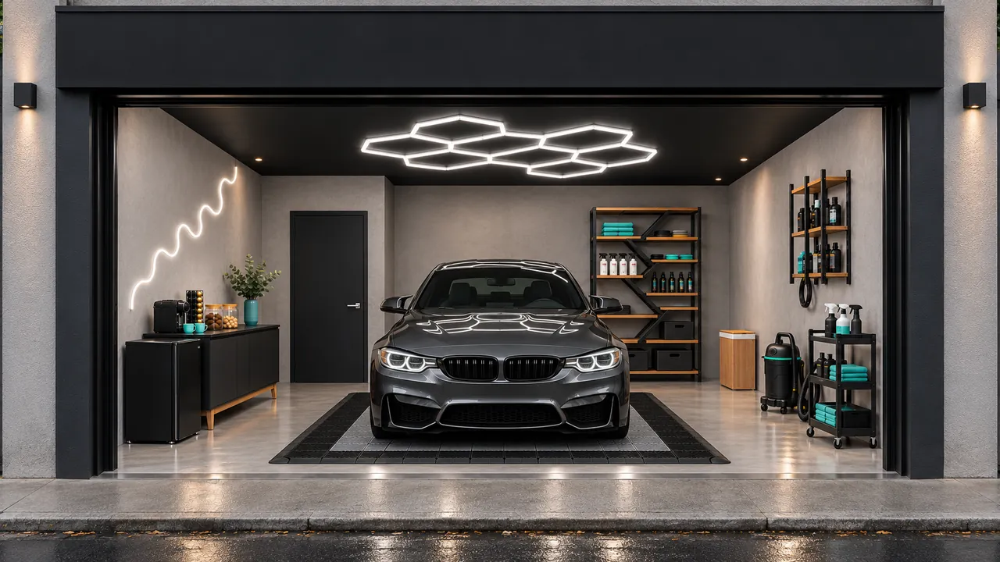

Seu cuidado.
Em cada detalhe.
Lavagem, higienização e proteção para carro ou moto. Cada escolha começa pelo estado do veículo e termina com um acabamento feito com critério.

Seu veículo em dia.
No ritmo da sua rotina.
Visitas mensais planejadas para um veículo cadastrado.
Mais organização na manutenção, sem agendamento automático.
A experiência de quem
já confiou no cuidado.
Opiniões de clientes após a entrega, sem filtro para esconder o que precisa melhorar.
Sua experiência também conta.
Após a entrega, o cliente recebe um link privado para avaliar o atendimento.
Perguntas antes
de escolher?
Posso escolher a data pelo site?+
Sim. A data é uma preferência, não uma reserva automática. O atendimento só é confirmado após a análise da agenda.
Quando meu veículo fica pronto?+
A duração depende da avaliação e das etapas contratadas. Higienizações exigem secagem; revestimentos precisam de cura. O prazo é informado antes do atendimento.
O que está incluído no Fine Form Care?+
São visitas mensais de lavagem para um único veículo cadastrado, conforme o plano escolhido. Polimento e higienização profunda são serviços contratados separadamente.
Seu veículo merece
uma escolha bem-feita.
Monte seu pedido em poucos passos. A Fine Form confirma os detalhes diretamente com você.
Montar meu orçamento